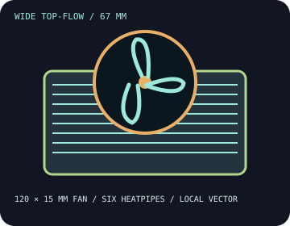

[ INDIVIDUAL COMPONENT // COOLING ]
Thermalright AXP120-X67
67 mm top-flow design with six heatpipes and a 120 × 15 mm PWM fan; its wider footprint needs more board-layout review than the smaller AXP90 series.

IDENTIFICATION: This record covers the AXP120-X67 model. Check the included socket kit and exact fan SKU; related low-profile models are not interchangeable.
Manufacturer specifications
| Overall dimensions | 123.5 × 120 × 67 mm with TL-C12015 fan; heatsink alone is 123.5 × 120 × 52 mm. Published assembly weight: 490 g. |
|---|---|
| Fan / thermal limits | TL-C12015, 120 × 120 × 15 mm; 1,800 RPM ±10% maximum, 59 CFM, 1.36 mm H₂O, 26.1 dBA, 0.22 A, 4-pin PWM. Air cooler; no radiator. Thermalright publishes no specific TDP ceiling for this model. |
| Mounting kit and sockets | Install with the supplied AXP120-X67 mounting hardware. Thermalright lists Intel LGA 115x, 1200, 1700, 1851, 2011/2011-3 and 2066; AMD AM4/AM5. Validate the board, socket kit, and memory layout against manufacturer instructions. |
| Clearance caveats | Reserve 67 mm vertical space and the full 123.5 × 120 mm envelope. Confirm DIMM height, VRM heatsinks, PCIe card and top-slot clearance, case walls, and orientation; the fan can overhang board components. |
Safe installation and maintenance
Use only the exact mounting components and manual for this model. Check motherboard and case fit before tightening; do not force contact with DIMMs, voltage-regulator covers, or expansion cards. Disconnect power before cleaning and recheck fan operation after service.
- Clean dust from the dense fin stack without bending fins or loading the fan hub.
- Assess CPU temperature under real sustained workloads rather than relying on an unpublished wattage estimate.
Manufacturer sources
- Thermalright — AXP120-X67 product specificationsModel-specific dimensions, TL-C12015 fan data, and socket listing.
- Thermalright — AXP120-X67 installation guide (PDF)Manufacturer mounting instructions for the model.
Static catalog reference only; consult current board, case, and cooler compatibility information.